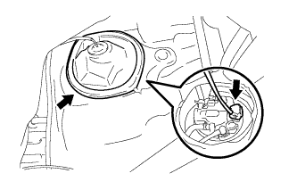
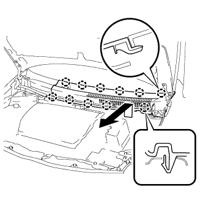
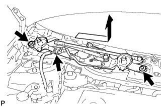
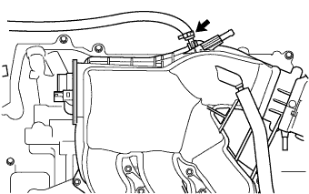
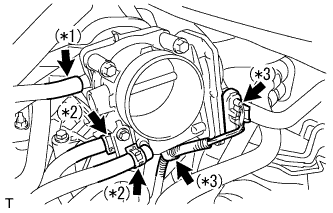
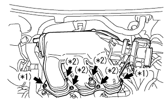
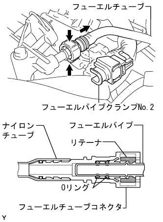
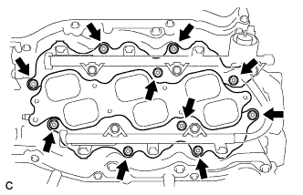
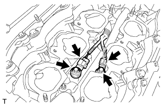

Knock Control Sensor (2GR-FE) Removal |
| 1. Fuel Spill Prevention Procedure |
Remove the rear seat assembly LH.
(see)
Remove the rear floor service hole cover.
 |
Disconnect the fuel pump connector from the fuel suction tube assembly.
Start the engine.
After the engine stops by itself, turn the IG OFF.
Crank the engine again and check that it does not start.
Remove the fuel tank cap and release the pressure in the fuel tank.
Disconnect the cable from the negative (-) battery terminal.
(see )
Connect the fuel pump connector to the fuel suction tube assembly.
Install the rear floor service hole cover with new butyl tape.
| 2. Disconnect Battery Negative Terminal |
| 3. Remove Front Wiper Arm Head Cap |
 |
Remove the 2 front wiper arm head caps.
| 4. Remove Front Wiper Arm & Blade Assembly RH |
 |
Remove the front wiper arm nut and front wiper arm & blade assembly RH.
| 5. Remove Front Wiper Arm & Blade Assembly LH |
 |
Remove the front wiper arm nut and front wiper arm & blade assembly LH.
| 6. Remove Hood to Cowl Top Seal |
 |
Disengage the 7 clips and remove the hood to cowl top seal.
| 7. Remove Front Side Panel Protector NO.1 LH |
 |
Disengage the pin and remove front side panel protector NO.1 LH.
| 8. Remove Cowl Top Ventilator Louver LH |
 |
Disengage the 11 claws and remove the cowl top ventilator louver LH as shown in the illustration.
| 9. Remove Front Side Panel Protector NO.1 RH |
 |
Disengage the pin and remove front side panel protector NO.1 RH.
| 10. Remove Cowl Top Ventilator Louver RH |
 |
Disengage the 5 claws and remove the cowl top ventilator louver RH as shown in the illustration.
| 11. Remove Windshield Wiper Motor & Link Assembly |
 |
Remove the 2 bolts and disconnect the windshield wiper motor & link assembly.
Disconnect the connector and clamp, and remove the windshield wiper motor & link assembly as shown in the illustration.
| 12. Remove Cowl Body Mounting Reinforcement RH |
 |
Remove the 3 bolts and remove the cowl body mounting reinforcement RH from the cowl top panel outer.
| 13. Remove Cowl Top Panel Outer |
 |
Disconnect the windshield deicer wire harness connector and disengage the 3 clamps, and detach them from the cowl top panel outer. (w/ Cold Area Specification)
 |
Disengage the clamps of the heater air duct splash shield seal No.2 and water guard plate RH, and bend each as shown in the illustration.
 |
Remove the 8 bolts and the cowl top panel outer.
| 14. Remove V-bank Cover Sub-assembly |
 |
Place both hands on the front of the cover and lift it upward to disengage the 2 front clips, then continue lifting upward to disengage the 1 rear clips, and remove the V-bank cover.
| 15. Drain Coolant (Toyota Genuine Super Long Life Coolant) |
Loosen the radiator drain cock plug.
Remove the reserve tank cap and drain the coolant.
Loosen the cylinder block drain cock plug and drain the coolant from the engine.

| 16. Remove Air Cleaner Cap w/ Air Cleaner Hose |
 |
Disconnect the air flow meter connector. (*1).
Disconnect ventilation hose No.2. (*2).
Disconnect the hose band (*3)
Disengage the 3 clamps and remove the air cleaner cap w/ air cleaner hose.
| 17. Disconnect Check Valve to Connector Tube Hose |
 |
Disconnect the check valve to connector tube hose from the intake air surge tank assembly.
| 18. Disconnect Ventilation Hose |
 |
Slide the clamp and disconnect the ventilation hose.
| 19. Remove Intake Air Surge Tank Assembly |
 |
Disconnect the vacuum hose from the throttle body assembly. (*1)
Slide the 2 clips and disconnect the water bypass hose No.2 and water bypass hose No.3 from the throttle body assembly (*2).
Disconnect the throttle motor connector from the throttle body assembly (*3).
 |
Disconnect the air control valve connector from the intake air surge tank.
Remove the 2 bolts and surge tank stay No.1.
Remove the 2 bolts and the throttle body bracket.
 |
Remove the 2 nuts from the intake air surge tank. (*1)
Using a socket hexagon wrench (5mm), remove the 4 bolts. (*2)
Remove the intake air surge tank and gasket.
| 20. Remove Engine Mounting Stay NO.2 RH (RH Side Installation Position) |
 |
Remove the bolt and 2 nuts, and remove engine mounting stay NO.2 RH.
| 21. Remove Engine Mounting Stay NO.2 RH (LH Side Installation Position) |
 |
Remove the bolt and engine mounting stay No.2 RH.
| 22. Disconnect Fuel Tube Sub-assembly |
 |
Remove the fuel pipe clamp No.2.
Disconnect the fuel tube. (see)
| 23. Remove Intake Manifold |
 |
Remove the 6 bolts and 4 nuts, and remove the intake manifold and 2 gaskets.
| 24. Remove Knock Control Sensor |
 |
Disconnect the knock control sensor connector.
Remove the 2 bolts and remove the 2 knock control sensors.